We propose a two-day closing workshop for Week 4 of STAY WHERE YOU ARE, Border Architectures, which the program defines as "movement as structured, regulated, and restricted through systems, infrastructure, and control". The workshop builds on our article on the Syrian population under temporary protection in the Önder Neighbourhood of Ankara (Bayraktar et al., 2025). One of its findings frames the proposal: a grid drawn from above is gradually rendered illegible by the paths, additions and adaptations of those who inhabit it (Dalal, 2022; Figure 2). In Önder, the article follows the same tension at the scale of a neighbourhood, between the boundary of an urban transformation area declared in 2013, the Siteler furniture district that separates the neighbourhood from the city, and the paths that residents opened across vacant plots (Figure 1).
The framework of STAY WHERE YOU ARE shapes the workshop in three ways. The program does not aim to represent migration but to create a situation where different positions can coexist, interact and remain unresolved, and its participants include individuals with lived migration experience. The outputs therefore need to be suitable for the documentary film and the publication. And since the project is a traveling structure, the workshop is grounded in Ankara without being confined to it.
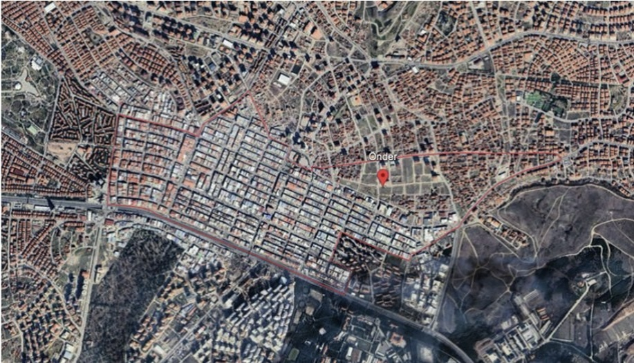
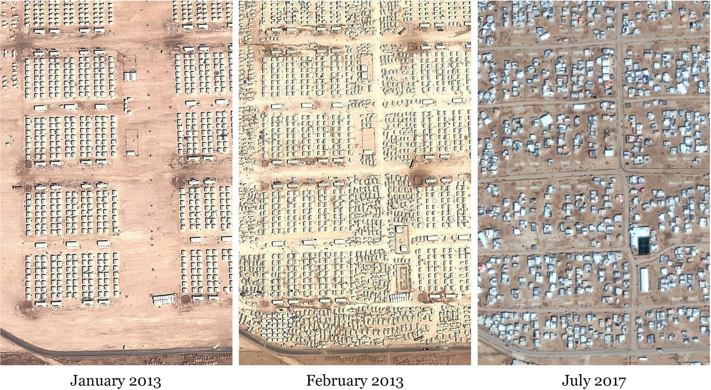
The opening presentation is organised around one question: if we move close enough to a border line, what do we find inside it? Scale is the instrument of this approach, but the starting point is the recognition that the line itself is an abstraction.
On the plan, a border is a single line. In Euclid's definition a line is "breadthless length", a succession of points that occupies no area of its own. This is what makes it so effective as a border: it leaves no margin between two sides. Yet this precision holds only on the abstract plane of the plan, within its own coordinates, scale and conventions. Transferred to the ground, the same line comes to contain the decisions that produced it (who drew it, on which map, under which authority), the things it cuts through (a street, a house, a walking route) and the consequences it generates (waiting, a permit, a demolition, a tenancy). Evans (1986) shows that drawing is never a neutral medium in its translation into building, Scott (1998) describes how the state simplifies space in order to render it legible and governable, and Harley (1989) reads the map as a text of power.
Moving closer to the line is therefore not a technical enlargement but a way of making visible, one layer at a time, what the abstraction leaves out. The workshop structures this approach as four layers of border, the abstract plane, the scale of the plan, the ground and everyday life, which are set out in the workshop section below.
In late November 1948, the Israeli and Jordanian commanders in Jerusalem, Moshe Dayan and Abdullah al-Tal, drew the ceasefire lines on a 1:20,000 map laid out on the floor of an abandoned house in the Musrara quarter. Their chinagraph pencils produced lines that were generally 3-4 mm wide, and in places the width of the line became irregular and indeterminate (Hilal et al., 2013). At that scale, 3-4 mm correspond to roughly 60-80 m on the ground (our calculation). The space between the two lines, and the thickness of the lines themselves, became a no man's land that remained in place until 1967 (Figures 3-5). Meron Benvenisti's question, cited by Hilal et al. (2013), is the question of this workshop: "Who owns the 'width of the line'?"
The case also involves migration, located within that width. The line divided Musrara into three parts: a residential part in West Jerusalem, a central zone designated as no man's land, and a commercial part near Damascus Gate under Jordanian control (Jerusalem Story Team, 2021). Its Palestinian residents fled or were expelled in 1948 and could not return; the sources describe the circumstances of their departure with different emphases. The vacated houses on the Israeli side were then allocated by the Ministry of Housing to Jewish immigrants from North Africa (Musrara, n.d.), who lived in overcrowded conditions exposed to sniper fire and landmines along the border (Caridi, 2015). In 1971, second-generation residents founded the Israeli Black Panthers, a protest movement against discrimination, in the same neighbourhood (Figure 6). The width of the line thus held two movements at once: those forced to leave, and the newcomers placed at its most exposed edge. Benvenisti's question becomes: who lives within the width of the line? The presentation will approach Jerusalem through the houses and residents of Musrara rather than through the wider symbolic and political status of the city.
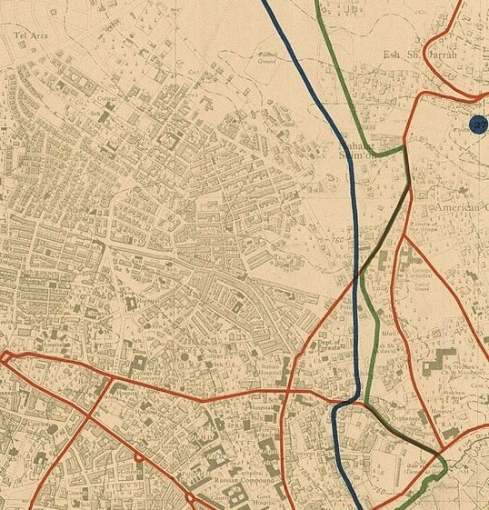
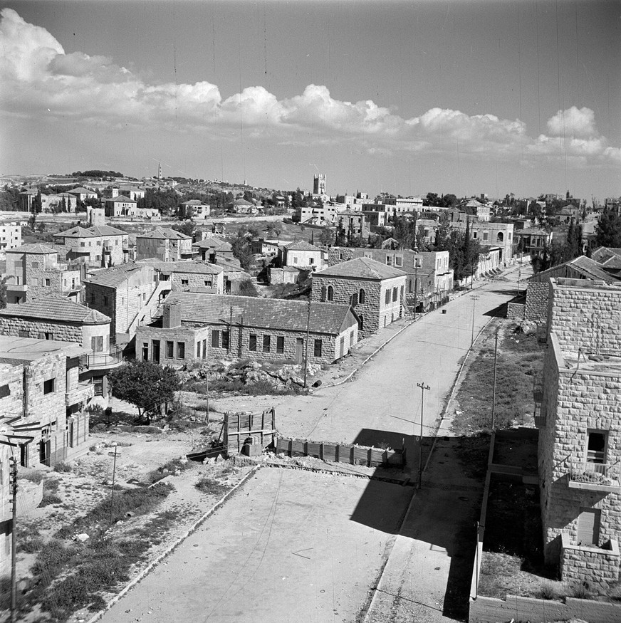
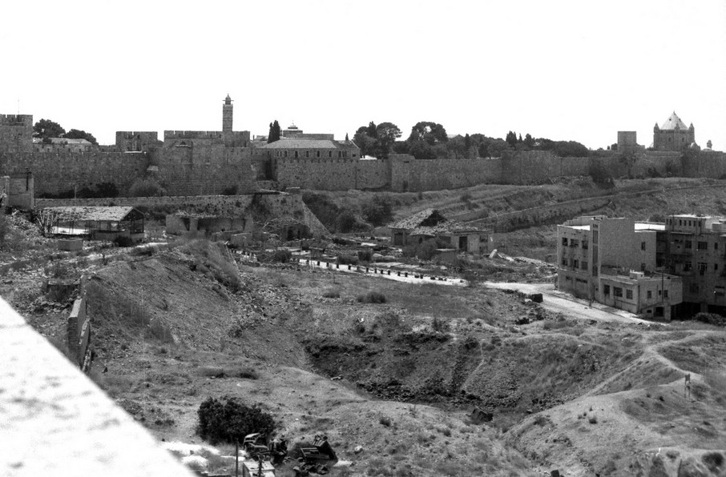
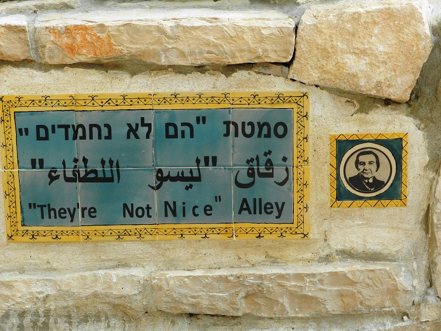
The same question can be carried to Önder, as an analogy rather than an equivalence: in Jerusalem the line is a state border drawn after a war, in Önder an urban planning decision, and the measures of violence, scale and duration differ. What the two cases share is a mechanism. According to the article, after Önder was declared an urban transformation area in 2013, Turkish families moved out and rented the houses they left to Syrian families, who continued to live in houses under demolition orders until 2015; the article describes this "spatio-temporal gap" as an opportunity for a population that chose to live in the city rather than in camps (Bayraktar et al., 2025). Günaydın Temel and Kahraman (2019) similarly observe that Syrians settled in the houses vacated by Turkish residents, attracted by low rents and by proximity to work in Siteler.
The student projects discussed in the article address this condition through lines of their own (Figure 7). Yokkent treats the paths found on the site as elements that can "define boundaries", distribute circulation and change over time (Figure 8); Eşik (Threshold) defines the neighbourhood centre as a threshold where two populations meet (Figure 9); and Köprü (Bridge) connects the housing area and Siteler across the site (Figure 10).
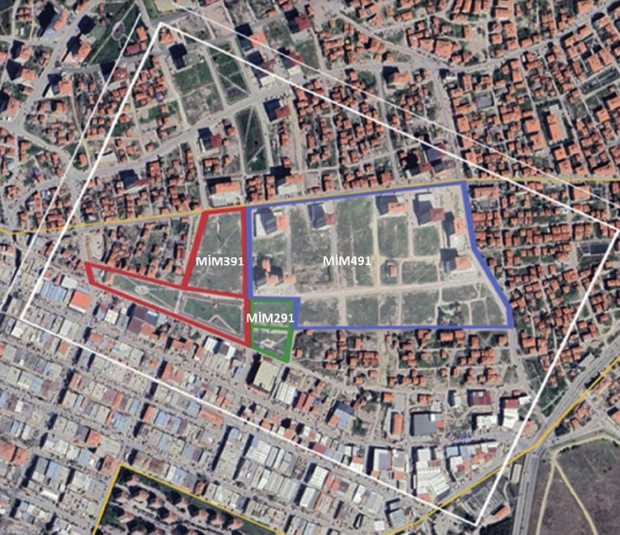
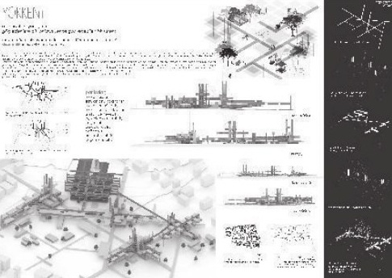
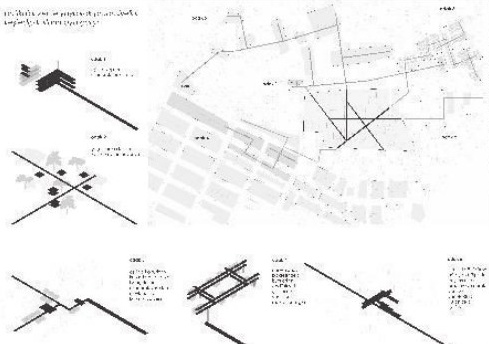
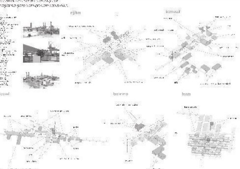
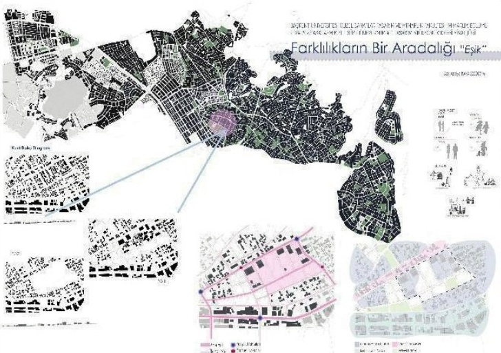
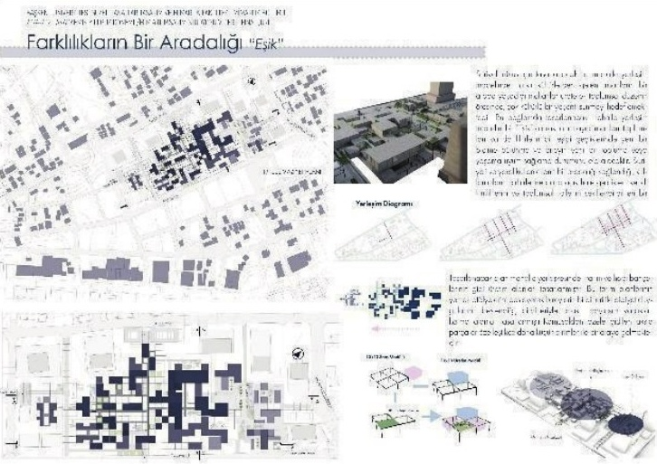
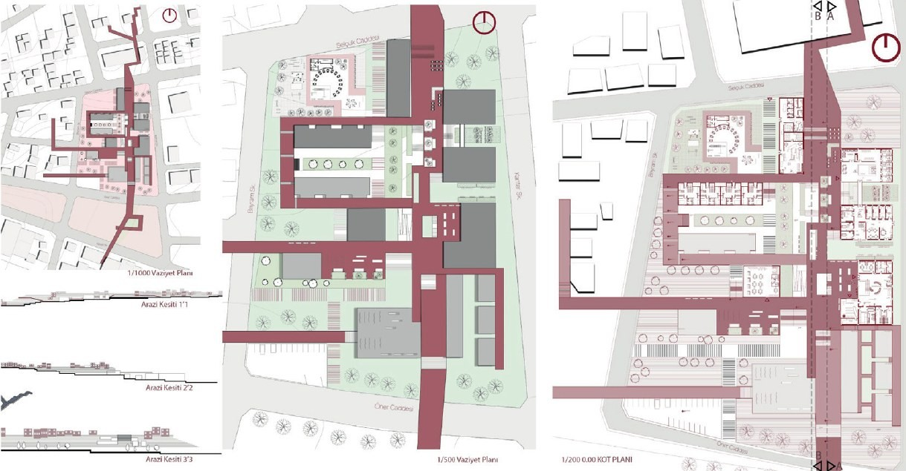
Every planning line carries a width on the ground according to its scale. The table below, calculated by the authors, closes the presentation and serves as a reference for the mapping, in which plans and sections of Önder are used at different scales.
| Scale | 0.3 mm line | 0.5 mm line | 1 mm line | 3-4 mm pencil line |
|---|---|---|---|---|
| 1:1,000 | 0.3 m | 0.5 m | 1 m | 3-4 m |
| 1:5,000 | 1.5 m | 2.5 m | 5 m | 15-20 m |
| 1:20,000 | 6 m | 10 m | 20 m | 60-80 m |
The workshop discusses border through the line and opens this discussion through four layers: the abstract plane, the scale of the plan, the ground and everyday life. Participants are grouped according to these layers, and each group maps Önder through its own layer. The first day combines the opening presentation with a walk through Önder, so that the lines of the plan are encountered on the ground before they are mapped; the second day is dedicated to the mapping.
Each layer reads the border in a different register and corresponds to one group of participants. The observations listed for Önder are taken from the article and from our earlier visit to the neighbourhood.
| Layer | The border here | Questions for the group | In Önder |
|---|---|---|---|
| Abstract Plane | Lines drawn on a plan or a section. They are abstractions that do not exist as such on the ground, and each expresses a decision without width. | Who drew the line, at which scale and under which authority? What does the line decide, and what does it leave out? | The urban transformation decision of 2013 and the last approved development plan of 2010, under which some of the parcels became green areas (Bayraktar et al., 2025, p. 170) |
| Scale of the Plan | The border changes with scale. At the scale of the house it is drawn within and around the dwelling; at the scale of the city it is defined by the relation of the neighbourhood to the networks around it. | How is the border within the house drawn and adapted? Where does the neighbourhood end when it is read through transport, infrastructure and the districts around it? | Privacy problems caused by inadequate dwelling space; limited public transport; Siteler as a barrier between the Syrian population and the city (Bayraktar et al., 2025, p. 172) |
| Ground | The physical elements that define a border on the ground. | Is the border here a void, a fence, a row of tall buildings or a road? What is physically present where the line passes? | Vacant parcels left after demolition and the high blocks built on them (p. 170); fragmented green areas that became unused voids; the paths that the Syrian population opened across the site (p. 172) |
| Everyday Life | The border as it is drawn in daily practices, in the communication among residents and between migrant and non-migrant residents. | Where is the border drawn in encounters, conversations and routines? Who addresses whom, where and in which language? | Arabic signs on almost every business along Selçuk Caddesi, alongside a few Turkish shopkeepers (p. 171); the limited interaction between the Turkish and Syrian populations (p. 172); the exchanges with shopkeepers and the forms of communication observed during our visit |
On the second day, each group produces its layer of a single map mounted on a wall. The map is not two-dimensional: prints of plans and sections of Önder at different scales are placed on it and can be mounted at different depths, so that the layers overlap without collapsing into one plane. Photographs taken by the participants during the walk and the workshop are either printed and added to the map or projected onto it. Each group works with the materials that correspond to its layer, from the plan prints of the abstract plane to the photographs of encounters in everyday life, and the four layers are brought together on the same wall at the close of the day.
The material provided to the groups includes plan and section prints of Önder at different scales, satellite images, a selection of observations from the article and the student projects (Figures 7-10), and the 1949 Jerusalem map. Bouchra Khalili's The Mapping Journey Project (2008-2011), in which migrants trace their routes on a map by hand, offers a reference for adding routes and voices to the map.
The title of the workshop refers to what this map produces. Once the border has been discussed through the four layers, the question becomes what kind of map the neighbourhood produces when it is imagined as a land. The (imaginary) land is a map that attempts to express more than an abstract, two-dimensional line whose meaning shifts across scales, and that seeks to make visible the border on the ground and in social life. The parenthesis in the title marks the position of the outputs: they do not claim to represent Önder or to speak on behalf of its residents, but construct, from a walk and a set of documents, what the lines of the neighbourhood might contain. The map can remain in the exhibition and serve the documentary film and the publication.
Proposed description for the program text:
The workshop asks what a border line contains once it is drawn on a plan, taking the Önder Neighbourhood in Ankara as its primary case. It focuses on the question of the border: How does a line on a plan define, separate, and fix a border, and, conversely, how is that border redrawn by the scales, grounds, and encounters it passes through? This workshop will approach the border through four layers, the abstract plane, the scale of the plan, the ground, and everyday life, considering it not simply as a line without width but in relation to drawing, infrastructure, physical edges, dwelling, and social encounter. It will explore how a three-dimensional map can mediate between the line on the plan and the lived neighbourhood, asking what becomes visible, to whom, and through what drawings, photographs, and layers.
Since participants include individuals with lived migration experience, no exercise depends on the narration of personal migration stories, and drawing on one's own experience remains optional. The walk takes place in an inhabited neighbourhood: photographs focus on spaces and traces rather than on residents, and people are photographed only with their consent. Khalili's approach, which shows hands and voices but not faces, offers a model for filming.
References shared with the bibliography of the article are marked in blue. Sources of the figures are given in their captions.
| Reference | Used for | Link |
|---|---|---|
| Bayraktar, A. N., Önertürk, C., Ölmez Gültek, M., Bek, E. N., Gürel, A., & Hatipoğlu, Ş. (2025). Geçicilik, göç ve barınma: Ankara Önder Mahallesi'nde geçici koruma altındaki Suriyeli nüfus için mekânsal öneriler. İnsan Hareketliliği Uluslararası Dergisi, 5(2), 159-192 | The article on which the workshop is based; Figures 1, 2 and 7-10 | DergiPark |
| Dalal, A. (2022). The refugee camp as urban housing. Housing Studies, 37(2), 189-211 | The grid of Zaatari and its transformation | DOI |
| Herz, M. (2013). Refugee camps of the Western Sahara. Humanity, 4(3), 365-391 | The camp between the temporary and the permanent | |
| Günaydın Temel, D., & Kahraman, Z. E. (2019). Göçmen mahallelerinde konut dış mekânında uyarlama: "Küçük Halep," Önder Mahallesi, Ankara örneği. Ankara Araştırmaları Dergisi, 7(2), 415-431 | Syrian households in houses vacated by Turkish residents; the adaptation of the outdoor space of houses | DOI |
| Euclid. Elements, Book I, Definitions (D. E. Joyce, Ed.) | "A line is breadthless length" | Clark University |
| Evans, R. (1986). Translations from drawing to building. AA Files, (12) | Drawing as a non-neutral medium | AA Bookshop |
| Scott, J. C. (1998). Seeing like a state. Yale University Press | Legibility and simplification | Yale University Press |
| Harley, J. B. (1989). Deconstructing the map. Cartographica, 26(2), 1-20 | The map as a text of power | DOI |
| Hilal, S., Petti, A., Weizman, E., & Perugini, N. (2013). The lawless line. London Review of International Law, 1(1), 201-209 | The 1:20,000 map, the 3-4 mm lines, Benvenisti's question | DOI |
| Jerusalem Story Team. (2021, October 10). Musrara: The new city neighborhood that became no-man's-land. Jerusalem Story | The division of Musrara into three parts | Jerusalem Story |
| Caridi, P. (2015). Musrara, the center of the world. Jerusalem Quarterly, (62), 29-49 | North African immigrants in the vacated houses; life along the border | Jerusalem Story |
| Musrara. (n.d.). In Wikipedia | The allocation of houses by the Ministry of Housing; the Black Panthers | Wikipedia |
| Khalili, B. (2008-2011). The Mapping Journey Project [Eight-channel video]. The Museum of Modern Art | Routes drawn by hand on a map; hands and voices without faces | MoMA |
The workshop is proposed as two full days at the close of Week 4. Durations are indicative and can be adjusted to the program and to the distance between the venue and Önder.
| Session | Duration | Content | Related section |
|---|---|---|---|
| Welcome and introduction | 15 min | The workshop, the two days and the four layers of border | Workshop / (Imaginary) Lands of Border: What Line Contains |
| Opening presentation | 60 min | The line as abstraction; Jerusalem, 1948 and Musrara; from Musrara to Önder; scale | Workshop Framework: The Thickness of a Line |
| Questions | 15 min | Brief questions on the presentation before the walk | Workshop Framework: The Thickness of a Line |
| Lunch and transfer to Önder | 90 min | Depending on the venue | |
| Walk through Önder | 120 min | A walk through the neighbourhood, the vacant parcels, the paths and the edge with Siteler; participants photograph throughout | Four Layers of Border |
| Reflection | 30 min | A gathering at a central meeting point to reflect on what was seen, conceived as a space for thinking rather than debate | Four Layers of Border |
| Documentation | Throughout the day | Filming and photography in line with the consent procedure | Ethical Considerations |
| Session | Duration | Content | Related section |
|---|---|---|---|
| Grouping and set-up | 30 min | Participants form four groups according to the layers; prints and materials are distributed | Four Layers of Border |
| Selection of material | 45 min | Each group selects photographs from the walk and plan and section prints at the scales relevant to its layer; photographs are printed or prepared for projection | Mapping Önder in Three Dimensions |
| Mapping, first session | 120 min, including a break | Each group builds its layer on the wall | Mapping Önder in Three Dimensions |
| Lunch | 60 min | Lunch break | |
| Mapping, second session | 90 min | The four layers are brought together into a single three-dimensional map | Mapping Önder in Three Dimensions |
| Walk-through and closing reflection | 45 min | Groups present their layers; closing reflection on the (imaginary) land the map produces | The (Imaginary) Land |
| Documentation | Throughout the day | Filming and photography in line with the consent procedure | Ethical Considerations |